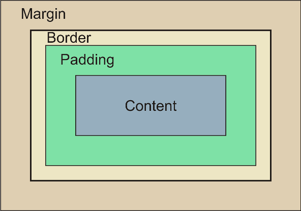
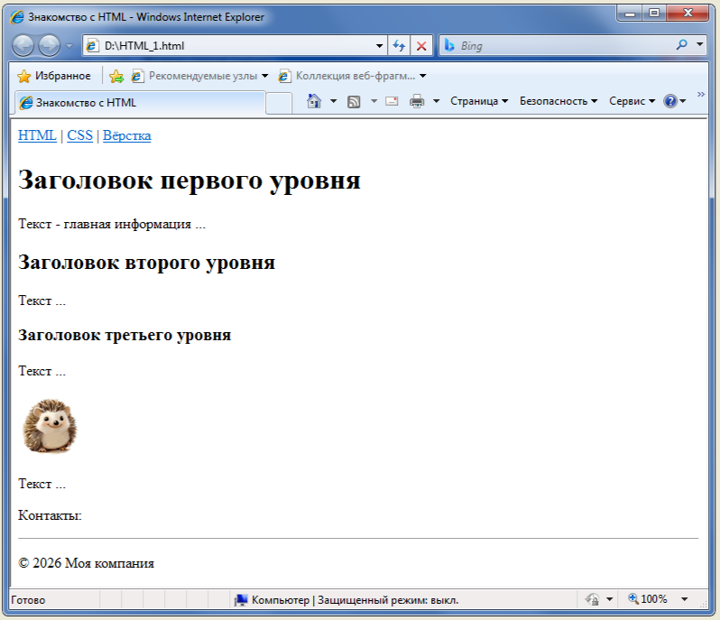

Содержание:
- С чего начать
- Базовая структура HTML-документа
- HTML-элементы и теги
- Блочные и строчные элементы
- Cемантические элементы
С чего начать
-
HTML-документ - это текстовый файл, написанный в HTML формате, поэтому для его написания подойдет практически любой текстовый редактор. Можно писать код в обычном блокноте Windows, в Wordpad или Microsoft Word, сохранив его с расширением .html, но это не очень удобно.
Для программирования и работы с исходным кодом лучше подходят специализированные редакторы, например, Notepad++ или Programmers Notepad из пакета WinAVR. Их главные преимущества – подсветка синтаксиса большого количества языков программирования, поддержка наиболее популярных кодировок, возможность одновременного открытия несколько вкладок, сворачивание кода.
- Для просмотра результата нужен браузер. Наверняка у всех на компьютере, смартфоне или планшете браузер уже установлен и возможно даже не один. Чтобы посмотреть, что получилось даже не нужно подключение к интернету.
Итак, чтобы создать первую HTML страницу нужно в текстовом редакторе набрать код, сохранить его с расширением *.html и открыть в браузере.
Базовая структура HTML-документа
HTML расшифровывается как Hyper Text Markup Language (язык гипертекстовой разметки). Это не язык программирования, а язык разметки для создания страниц.
Каждый HTML-документ состоит из элементов, которые задаются с помощью тегов.
Любая HTML-страница содержит минимальный набор базовых элементов:
- <!DOCTYPE html> - объявление типа документа, сообщает браузеру, что используется HTML5
- <html> - корневой элемент, содержащий весь HTML-документ. Все остальные элементы должны находиться внутри него
- <head> - раздел для заголовка страницы и технической информации. Содержит метаданные, заголовок страницы, ссылки на CSS и JavaScript. Внутри <head> обычно размещают следующие элементы: <link>, <meta>, <script>, <style>, <title>. Содержимое <head> не отображается на странице в браузере
- <body> - включает в себя все видимое содержимое страницы. В документе может быть только один элемент <body>
- Тег <!-- --> - добавляет комментарий в код документа. Текст комментария не отображается на странице
Базовый "скелет" HTML-страницы:
<!DOCTYPE html>
<html lang="ru">
<head>
<!-- Основные метаданные -->
<meta charset="UTF-8">
<title>Заголовок окна страницы</title>
</head>
<body>
Всё, что содержат страницы на любых сайтах: тексты, таблицы, изображения, видео — раположено здесь.
</body>
</html>
HTML-элементы и теги
Элементы в HTML задаются с помощью тегов. HTML-элементы и HTML-теги – это не одно и то же, так как элемент включает в себя и теги, и их содержимое. Например, <p>Текст параграфа</p> - это элемент, а <p> и </p> - теги.
По сути тег - это команда для браузера, которая сообщает, как нужно отобразить содержимое. Тег всегда заключается в угловые скобки, внутри которых указывается ключевое слово - имя тега.
Большинство тегов - парные. Они состоят из окрывающего и закрывающего тега. Закрывающий тег отличается наличием косой черты / перед именем тега. В примере <p> - открывающий, а </p> - закрывающий тег.
Одиночные теги не имеют содержимого и, следовательно, закрывающего тега. Например, <hr> - рисует горизонтальную линию.
К HTML-элементу можно добавить атрибуты, которые предоставляют дополнительную информацию об элементе.
Атрибут имеет имя и значение. Синтаксис: <тег имя_атрибута="значение">Содержимое</тег>. Атрибуты всегда пишутся только внутри открывающего тега. Значение атрибута можно заключать в двойные или одинарные кавычки.
Атрибуты позволяют задать параметры элемента, изменить его поведение или стиль. Элемент может иметь насколько атрибутов, которые обязательно разделяются пробелом.
Вложенность элементов позволяет размещать одни HTML-элементы внутри других. Благодаря вложенности можно создавать понятную и логичную структуру страницы. Главное соблюдать правила:
- элементы должны корректно открываться и закрываться не перекрывая друг друга
- внутрь строчного элемента можно вкладывать только данные (текст) или другие строчные элементы. Вкладывать блочные элементы (например, <div>, <p>) внутрь строчных нельзя
Блочные и строчные элементы
Блочные элементы в HTML — это элементы, которые отображаются на веб-странице в виде прямоугольника, занимающего всю доступную ширину. Если элемент находится непосредственно в <body>, он растягивается на всю ширину окна браузера. Если вложен в другой блок — на всю ширину своего родителя. Можно также явно задать размеры блока.
Любой блочный имеет следующие области:
- Содержимое (Content) — область, где отображается контент, размер которой можно изменить с помощью таких свойств, как width и height
- Внутренний отступ (Padding) — пространство между содержимым и границей
- Граница (Border) — рамка, окружающая содержимое и внутренние отступы
- Внешний отступ (Margin) — пространство между границей элемента и соседними элементами

Примеры блочных элементов:
- <div> - универсальный контейнер для группировки контента
- <p> - параграф текста
- <h1>...<h6> - заголовки разных уровней
- <ul>, <ol> - маркированные и нумерованные списки
- <li> - элемент списка
- <header>, <footer>, <section>, <article>, <aside> - семантические блоки для шапки, подвала, секций и боковых панелей
Блочные элементы нужны для создания структуры страницы. Они позволяют разделить контент на логические блоки.
Внутри блочного элемента допустимо размещать как другие блочные элементы, так и строчные.
Строчные элементы в HTML — это элементы, которые отображаются на веб-странице внутри строки и занимают пространство, ограниченное тегами, определяющими строчный элемент. Ширина строчного элемента определяется только местом, необходимым для отображения их содержимого. В отличии от блочных элкментов они не начинают новую строку.
Строчные элементы как правило используются для стиллизации текста или его логического выделения.
Строчные элементы могут содержать другие строчные элементы, но вставлять блочные элементы внутрь строчных запрещено.
Примеры строчных элементов:
- <b> - устанавливает жирное начертание текста
- <i> - устанавливает курсивное начертание текста
- <strong> - выделение текста как особо важного (по умолчанию отображается жирным)
- <em> - акцентирует текст (по умолчанию отображается курсивом)
- <span> - универсальный контейнер для стилизации фрагментов текста
- <a> - для создания рссылок
- <img> - для вставки изображения
- <button>, <input> - для создания интерактивных элементов формы, например
Строчный и блочный - не жёстко заданные в HTML категории. Можно переопределить тип элемента с блочного на строчный или со строчного на блочный. Для этого используется CSS-свойство display.
Чтобы сделать блочный элемент строчным, надо свойству display задать значение inline ( display: inline;).
Чтобы сделать строчный элемент блочным, надо свойству display задать значение block ( display: block;).
Cемантические элементы
В современном стандарте HTML5 огромное количество семантических элементов, которые заменяют общие контейнеры вроде <div>. Семантические теги явно указывают назначение элемента, их задача - описывать смысл и структуру содержимого.
Основные преимущества использования семантических элементов:
- Код становится более читаемым и понятным
- Поисковые алгоритмы лучше распознают структуру и содержание страницы
- Повышается доступность для людей с ограниченными возможностями
- Упрощается стиллизация
Основные семантические элементы:
- <header> - вводная часть страницы или раздела, обычно содержит логотип, меню навигации
- <nav> - раздел с навигационными ссылками
- <main> - основное, не повторяющееся на других страницах, содержимое документа (должен быть только один на странице)
- <article> - самодостаточная часть контента, которая может распространяться независимо, например, статья
- <section> - тематическая группировка контента
- <aside> - контент, косвенно связанный с основным (боковые панели, сноски)
- <footer> - заключительная часть страницы или раздела
- <h1>...<h6> - заголовки разных уровней
- <ol>, <ul>, <dl> - списки
- <form> - формы
Пожалуй, это минимальный набор, необходимый для создания HTML-страницы. Ниже пример с комментариями:
<!DOCTYPE html> <!-- объявление типа документа для HTML5 -->
<html lang="ru"> <!-- корневой элемент,
заключает в себе все содержимое веб-страницы
lang=".." атрибут для указания языка страницы
Внутри <html> страница строго делится на две большие зоны:
невидимую (<head>) и видимую (<body>)-->
<head> <!-- раздел для заголовка страницы и технической информации
Внутри контейнера <head> допускается размещать следующие элементы: <base>, <basefont><bgsound>, <link>, <meta>, <script>, <style>, <title>
Содержимое <head> не видимо для посетителей сайта -->
<!-- тег <meta> - метаданные, которые используются для хранения информации предназначенной для браузеров и поисковых систем charset=".." атрибут задает кодировку документа -->
<meta charset="UTF-8">
<!-- тег <title> - заголовок окна веб-страницы, отображается в левом верхнем углу окна браузера -->
<title>Знакомство с HTML</title>
</head>
<body>
<header> <!-- вводная часть страницы (логотип, меню навигации) -->
<nav> <!-- блок навигации по сайту (навигационные ссылки)-->
<a href="1.html">HTML</a> |
<a href="2.html">CSS</a> |
<a href="3.html">Вёрстка</a>
</nav>
</header>
<main> <!-- основное содержимое страницы -->
<h1>Заголовок первого уровня</h1>
<p>Текст - главная информация ...</p>
</main>
<article> <!-- Статья -->
<h2>Заголовок второго уровня</h2>
<p>Текст ...</p>
<!-- Для всатвки изображения нужно указать путь к foto.png в атрибуте src="foto.png" -->
<img src="foto.png" alt="Фото" width="70px">
<p>Текст ...</p>
<section> <!-- Раздел статьи... -->
<h3>Заголовок третьего уровня</h3>
<p>Текст ...</p>
</section>
</article>
<footer>
<form>
<!-- Обмен данными между пользователем и сервером -->
</form>
<!-- Контакты, ссылки на соцсети, копирайт и т.п.-->
<p>Контакты:</p>
<hr>
<p>© 2026 Моя компания</p>
</footer>
</body>
</html>
Если скопировать этот код в редактор и сохранить файл, например, под именем index.html, в этом же каталоге разместить изображение с названием foto.png, а потом открыть index.html в браузере, получится примерно так:

Страница, конечно, смотрится скучновато. Чтобы всё выглядело красиво в HTML существуют стили, то есть набор правил, которые определяют как будут выглядеть элементы - цвет, размер, положение на странице и т. д.
Все эти правила и описываются в CSS (Cascading Style Sheets) - каскадных таблицах стилей.